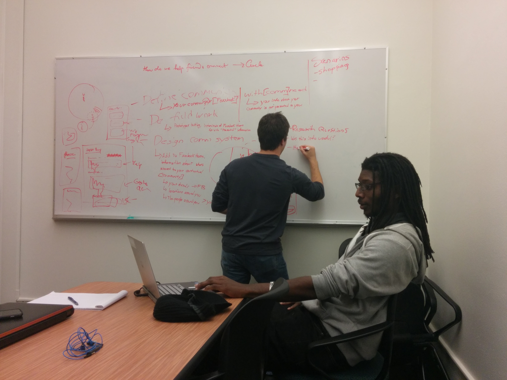
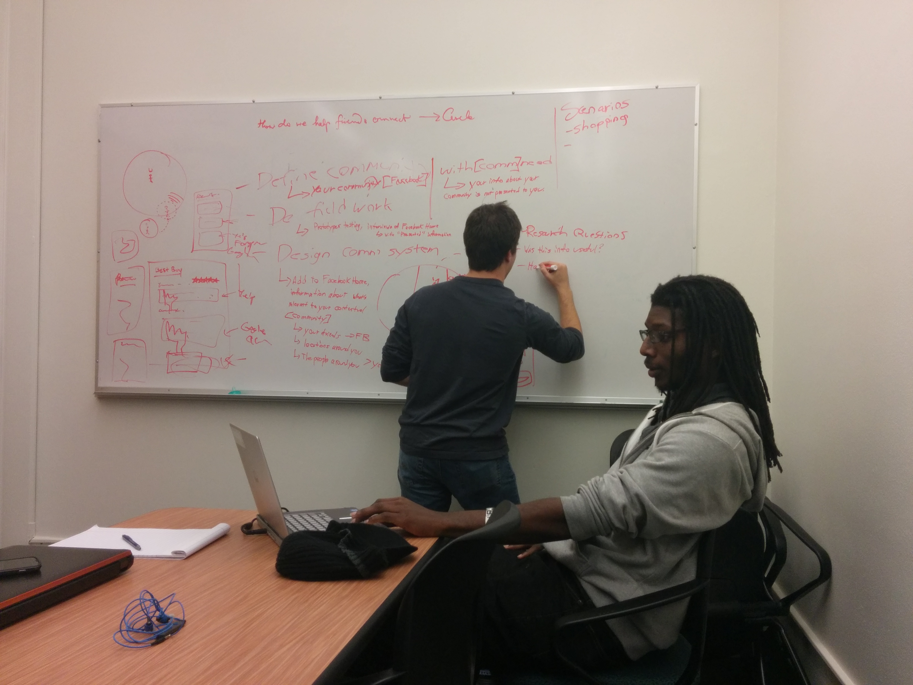

Summary
The job given to our team was to identify a community of users who have a communication need that's unmet, do fieldwork to better understand the needs of the potential users, and design a prototype of an online system that solves the communication problem identified.
Our group was interested in analysing mobile contextual communication and information presentation. We researched and designed a future prototype for the Facebook Home lock screen which contextually presents information and contact meta information while travelling from home to a restaurant. We did an extensive literature review and created a survey determining what users want within certain contexts, what information they need and are willing to share in order to better communicate, and user privacy concerns regarding contextual systems.
Defining the Project
Contextually Relevant?
In today's world, cell phones allow users to organize their activities with millions of applications and view almost any information on the web at will. The way you interact with these services and information is the same regardless of context - one must manually select what they want to use.
A contextually relevant system is one which is able to anticipate what the users would most likely use or want to see based upon the context they are in. Some excellent examples of modern contextual based systems are Google Now and Cover.
Contextually relevant systems are now pushing the bounds of technology, user personalization, and user privacy.
Who are the Users?
The potential users of this technology would have access to smart phones and want a better experience of communicating and accessing information based upon their context.
Project Goals
After some intense brainstorming sessions, we formed some realistic constraints and goals to focus our research and design.
 

Conceptualize a system for the Facebook Home lockscreen.
A contextually relevant system will never be able to perfectly predict what a user wants. A lockscreen is unobtrusive and can easily be disregarded if it does not contain relevance to the user. Plus, Facebook would be a realistic platform if this were developed since it already holds a plethora of information about people and their personality.
Present Others' Meta Context
The problem we currently face for mobile communication is that there is no way for user A or user B to engage in any meta communication about the intended exchange. Knowledge of whether a friend is busy or not could save you the time of a missed or rejected call. We wanted to find creative solutions to solve this annoyance.
Research and Design for a Scenario
The scenario we are designing our prototype for is a journey someone would take from their home to a restaurant. We placed this constraint to focus the content of what we are presenting in a digestible manner others could understand.
Explore Privacy Concerns
The ability for technology to predict your intention is still in its infancy. If contextually relevant systems are going to be implemented, it's extremely important to define the privacy concerns and design systems that ameliorate them.
Literature Review
Our literature review covered the challenges and user needs for designing a contextually relevant system.
Usage by Location
Categorizing and presenting information for each and every context is impossible. Karikoski & Soikkeli (2013) broke this problem down by analyzing mobile phone usage patterns of location context. They identified five locations with most usage: home, office, other meaningful, elsewhere, and abroad. These usage contexts are an excellent way to form a system based on context.
Research found voice calls are used least frequently at home, but the length of a call is the longest. SMS is sent most frequently at the office, where call length is the shortest. While one is elsewhere, one is more likely to initiate a call. These usage patterns are to aid in successful anticipation of user intent based on location.
Personalized Usage
Although there is a high volume of research concerning context usage patterns, sampled participants usage patterns can vary highly (Bohmer et. al, 2011; Karikoski et. al., 2013). To account for varied individual usage patterns within a context, there has to be a user intent prediction algorithm that feasibly anticipates which application the user would most likely open. Researchers have been prototyping and testing these anticipatory algorithms; even designing them to be the least battery intensive (Huang et. al, 2012; Shin et. al, 2012; Sun et. al, 2013; Parate et. al, 2013).
User Needs
Kaasinen (2003), prototyped an early contextual device that provided relevant SMS and GPS contextual information. Users were asked to be autonomous within a set scenario and report their needs. The research found that users were interested in receiving location aware information about traffic, weather, or last-minute ticket deals throughout most scenarios. The GPS services should prompt pre-trip planning and on-route information for points of interest. Most users expressed they would desire this type of technology to prompt phone numbers for relevant friends and services. Many requested that they would like to store and share location-aware data with others. Users indicated that they were likely to use this technology in an unfamiliar location.
Fieldwork
We designed our survey similar to prior research (Knittel et. al, 2013) with the goals of (1) what information people would like to know about their contacts context to better communicate with them, (2) what information people are willing to share about their context, and (3) what privacy concerns people have regarding contextual systems.
What people need to better communicate with contacts
According to the participants, knowing how to better communicate with others would involve an abstract location, a specific location, and an indication of whether they are busy.
What people are willing to share to better communicate
The same participants indicated that they would only be willing to share their abstract location.
Privacy concerns
We were able to grasp a few repeating concerns about privacy to remember while designing: uncontrolled access to my private information, giving up location as well as possibly suggesting what you are doing there, and not being aware of the information you are agreeing to share.
Takeaway
Creating a non-invasive meta context would have to involve (1) sharing an abstract location (home, work, traveling elsewhere), (2) knowledge of whether person is busy (sharing calendar status), (3) advanced privacy options with the ability to share more context or restrictions.
Ideate and Refine
We created a ton of ideas by group sketching and making low fidelity mock-ups. We continuously modified our design with the feedback we got from others

Final Prototype
Our prototype was created on Axure and you can play with it here (zoom your browser to 25%)!
We presented this project to the University of Washington and the Chase user research team. Read the entire report here!
Many thanks to my team: Phannipha Arunyaangkul, Hasani Burns, and Tridiv Sardesai!